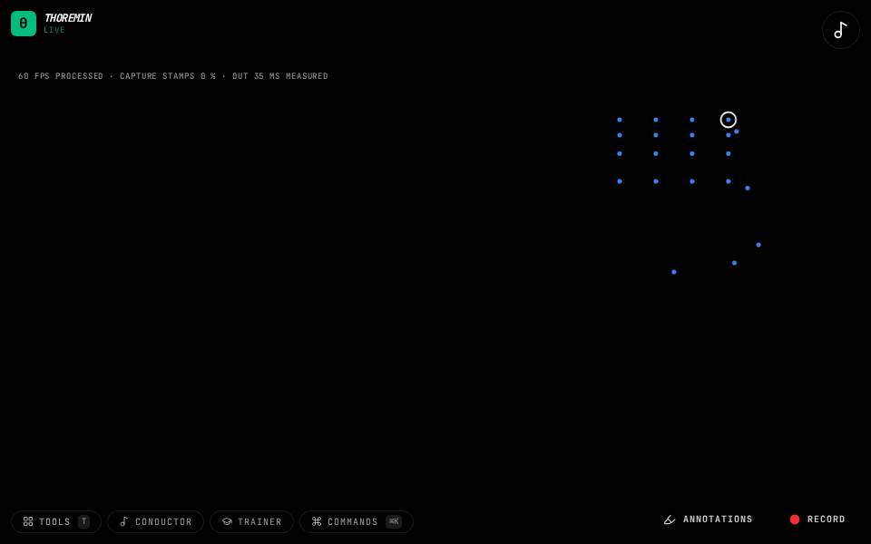

Air Bass

What to do
- Hold both hands up in front of you.
- Slide the distance between them to choose the note: that is the neck.
- Pluck with your other hand to sound it.
A bass played in the air: one hand is the neck, the other plucks.
How it works
The distance between the hands is read as a position on the neck, snapped to the notes of the scale. A plucking gesture of the other hand sounds the note, predicted before the frame that shows it so it sounds on time.
Its settings: Air bass. Every knob: the manual.